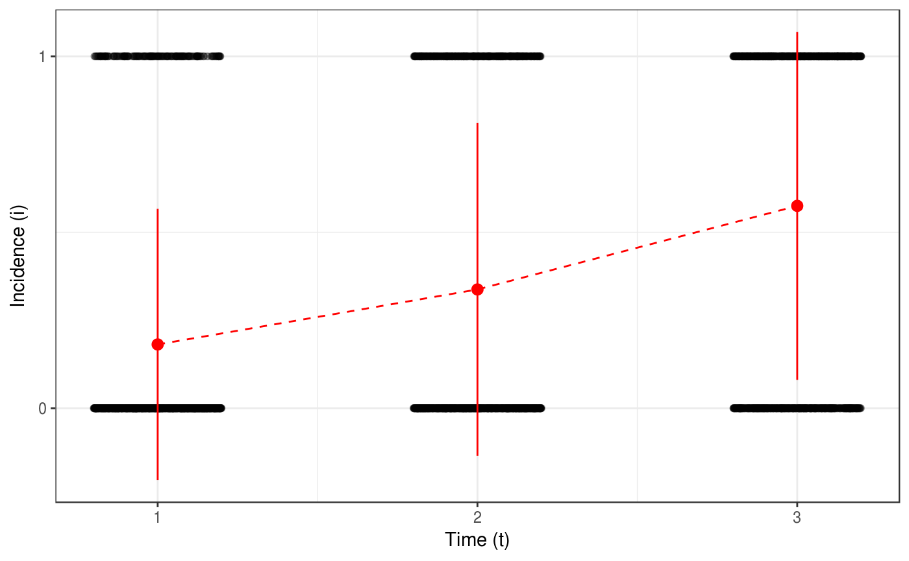
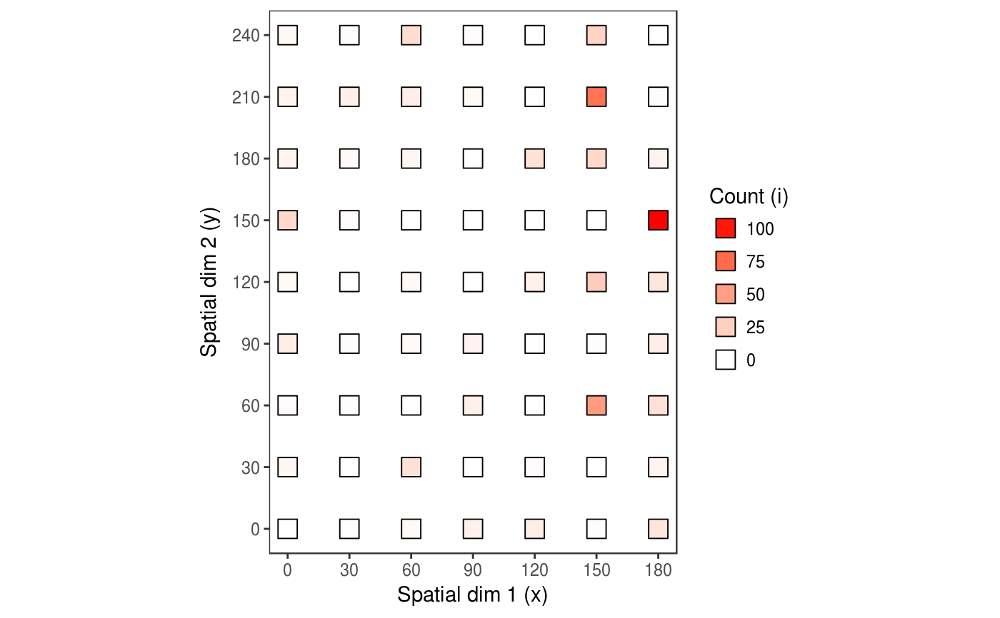
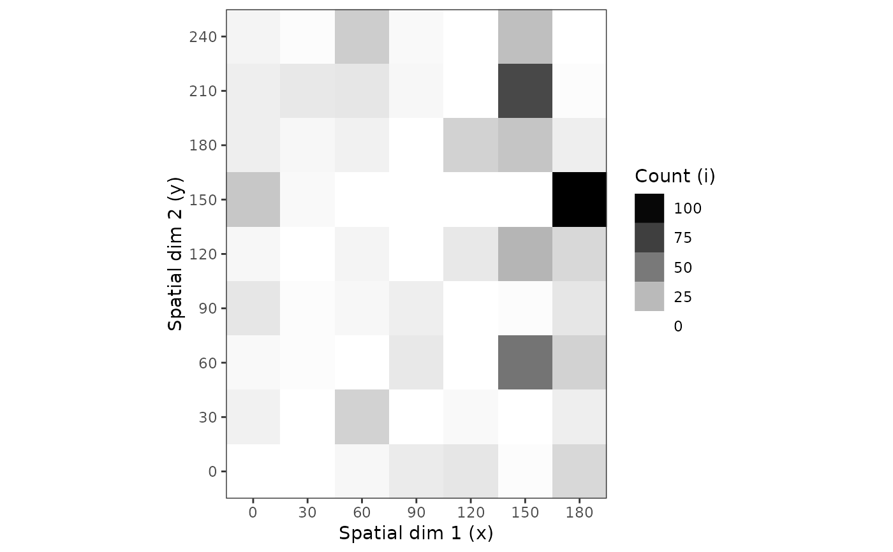
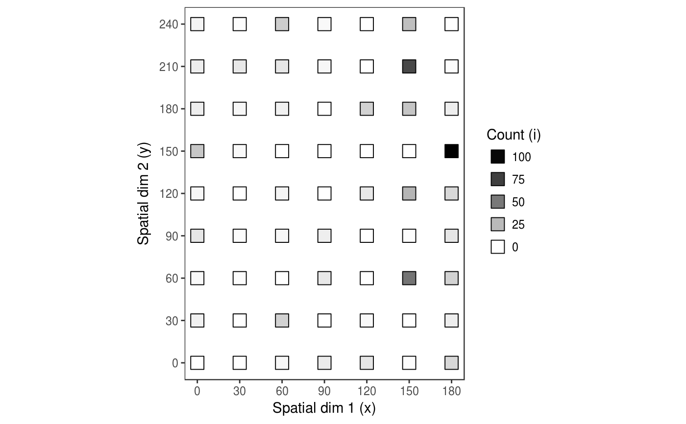

count(), incidence() and severity() create eponym
objects. All of these classes inherit from the base class intensity.
The choice of the class depends on the nature of the data set.
count(data, mapping, keep_only_std = TRUE) incidence(data, mapping, keep_only_std = TRUE) severity(data, mapping, keep_only_std = TRUE)
Arguments
| data | A data frame. Each line corresponds to a record (or case, or entry). |
|---|---|
| mapping | A |
| keep_only_std | Are only standard names kept when proceeding to mapping?
Setting |
Value
An incidence object.
When printed, difference information are available:
The number of sampling units.
The time.
Is it georeferenced (TRUE/FALSE)
Are there any NA data (TRUE/FALSE)
Is it a complet array (TRUE/FALSE)? A complete array means that all the recorded values allow to display an array (even if some data are not available), but this was explicitelly specified. To complete a dataset, just use
complete(data). You can also remove NA, which is necessary to use some analysis technics, usingreplaceNA(data)orreplace.na(data). Note that using both commands will results in modifying the original data sets which will be specified.
Details
incidence reads disease incidence data from a data frame and return an
incidence object. All of these classes inherit from intensity class.
count: Each sampling unit contains from 0 to theoreticaly an infinity of data. Number are positive integers.
incidence: Each sampling unit contains an number of diseased plants, ranging from 0 to
nwhich is the total amount of plants per sampling unit.severity: Each sampling unit contain a percentage of disease, a positive real number ranging from 0.0 to 1.0.
Class intensity and inherited classes
All the classes recording disease intensity measurements inherit from this
class. The class intensity is virtual which means that no object of a
class intensity can be constructed. This class only describes common
features of all the different disease intensity measurements implemented in
this package (count, incidence and
severity). You should call one of these inherited classes
instead, depending on the nature of your data.
By convention, the first columns of the different data frames of each slots have names, but the spatial, temporal or even disease information do not need to fit to these conventions or may be less straightforward and need more columns to record correctly all the information. In such unusual situations, the automatic options of the analysis tools would need to be overridden to be able to work in the desired way.
The differences between the different inherited classes regard only the
obs slot. In the case of count, the data expected for
each record are positive integers (N+). For incidence, the data
sets are supposed to be two information set per records, the number of
diseased unit per sampling unit (r) and the total number of units per
sampling unit (n). Note that in its current implementation, n is supposed to
be the same for a whole data set. Unequal sampling units are not implemented
yet. Finally, for severity, r is positive real ranging from 0
to 1 and depecting a percentage.
space A data frame containing only spatial information. Each row
corresponds to a sampling unit. By convention, the first 3 columns are
names x, y, z.
time A data frame containing temporal information. By convention, the
first column is named t.
obs A data frame containing disease observations themselves. The name of the columns may differ between the sub-class chosed to record the data.
Note that it is possible to create a "severity" object but no statistical tools are currently implemented to deal with such an object.
An intensity object contains at very least the "pure" intensity
records (column r) which is a so-called observational variable.
Another observational variable, the number of individuals in a sampling unit
(n), is present in the case of a incidence object. Very often
in addition to observational variables, there are spatial (columns x,
y and/or z) and/or temporal (column t) variables.
Note that the severity class and the z variable (the 3rd
spatial dimension) are implemented but no statistical methods use them at
this point.
Examples
## Create intensity objects # Implicite call: The variable mapping does not need to be specified if the # column names of the input data frame follow the default names. colnames(tomato_tswv$field_1929) # Returns c("x", "y", "t", "i", "n")#> [1] "x" "y" "t" "i" "n"my_incidence_1 <- incidence(tomato_tswv$field_1929) my_incidence_1#> # A mapped object: incidence class #> # dim: 2 space, 1 time, 2 obs #> [x] [y] [t] [i] [n] #> x y t i n #> 1 1 1 1 0 1 #> 2 1 2 1 1 1 #> 3 1 3 1 0 1 #> 4 1 4 1 1 1 #> 5 1 5 1 0 1 #> 6 1 6 1 0 1 #> # ... with 4314 more records (rows)my_incidence_2 <- incidence(tomato_tswv$field_1929, mapping(x = x, y = y, t = t, i = i, n = n)) identical(my_incidence_1, my_incidence_2)#> [1] TRUE# Explicite call: Otherwise, the variable mapping need to be specified, at # least for column names that do not correspond to default names. colnames(aphids) # Returns c("xm", "ym", "i")#> [1] "x" "y" "xm" "ym" "i"#> # A mapped object: count class #> # dim: 2 space, 0 time, 1 obs #> . . [x] [y] [i] #> x y xm ym i #> 1 1 1 0 0 0 #> 2 2 1 30 0 0 #> 3 3 1 60 0 3 #> 4 4 1 90 0 7 #> 5 5 1 120 0 9 #> 6 6 1 150 0 1 #> # ... with 57 more records (rows)# We can drop the "i = i" in the mapping. my_count_2 <- count(aphids, mapping(x = xm, y = ym)) identical(my_count_1, my_count_2)#> [1] FALSE# It is possible to change the variable mapping after the creation of an # intensity object: another_incidence <- incidence(hop_viruses$HpLV) another_incidence#> # A mapped object: incidence class #> # dim: 2 space, 1 time, 2 obs #> [x] [y] . . [t] [i] [n] #> x y xm ym t i n #> 1 1 1 0 0 1996 1 1 #> 2 1 2 0 1.8 1996 0 1 #> 3 1 3 0 3.6 1996 0 1 #> 4 1 4 0 5.4 1996 0 1 #> 5 1 5 0 7.2 1996 0 1 #> 6 1 6 0 9 1996 0 1 #> # ... with 2544 more records (rows)#> # A mapped object: incidence class #> # dim: 2 space, 1 time, 2 obs #> . . [x] [y] [t] [i] [n] #> x y xm ym t i n #> 1 1 1 0 0 1996 1 1 #> 2 1 2 0 1.8 1996 0 1 #> 3 1 3 0 3.6 1996 0 1 #> 4 1 4 0 5.4 1996 0 1 #> 5 1 5 0 7.2 1996 0 1 #> 6 1 6 0 9 1996 0 1 #> # ... with 2544 more records (rows)## Plotting data plot(my_incidence_1) # Same as: plot(my_incidence_1, type = "spatial")plot(my_incidence_1, type = "temporal")#> Warning: Computation failed in `stat_summary()`: #> Hmisc package required for this functionplot(my_count_1, tile = FALSE, size = 5)plot(my_count_1, type = "temporal") # Not possible: there is only 1 date. # Using grayscale: plot(my_count_1, grayscale = TRUE)plot(my_count_1, grayscale = TRUE, tile = FALSE, size = 5)